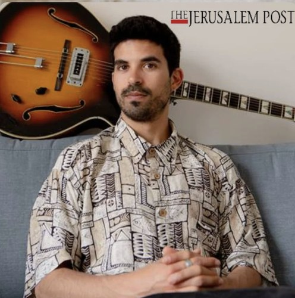
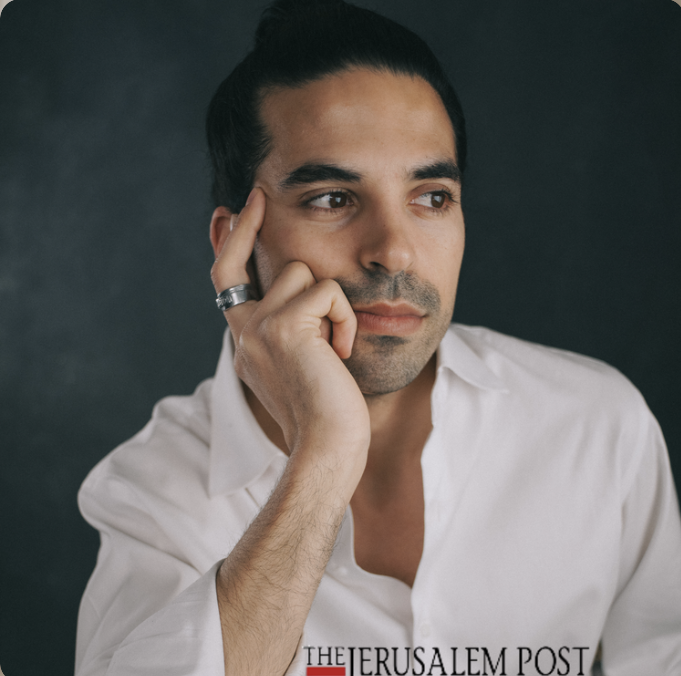
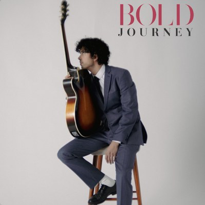
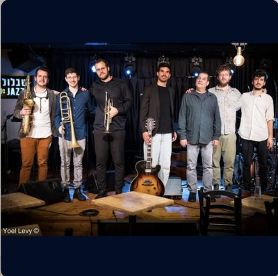

Winner of the Prime Minister's Prize for Jazz Composition. Selected coverage and interviews below — click through for the full pieces.
-
i24 News Video feature following Kai on tour. Watch →

-
The Jerusalem Post A profile on how the Tel Aviv–raised guitarist has found his footing in New York's jazz scene. Read →

- Reshet 13 Coverage naming Kai's sextet a standout following his 2024 Prime Minister's Prize for Composers win. Watch →
-
The Jerusalem Post A second feature on Kai Gluska's music and New York routine. Read →

-
Bold Journey A longer-form conversation on Kai's path and process. Read →

- 106.2FM Israeli jazz radio interview. Listen →
-
Live Around Midnight Radio performance and interview. Watch →

-
i24 News Feature on the Kai Gluska Trio. Watch →